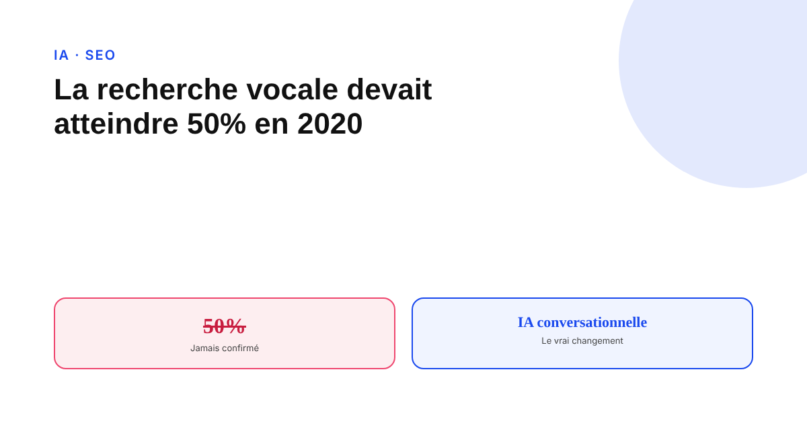
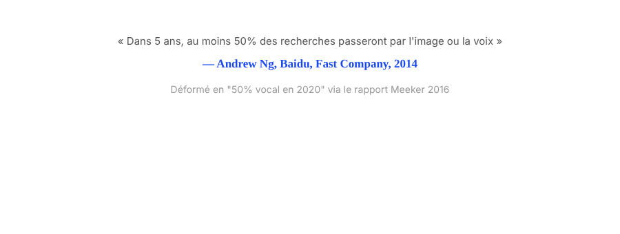

La recherche vocale devait représenter 50 % des requêtes : que s'est-il passé ?
La prédiction a circulé pendant des années dans tous les articles SEO sur la recherche vocale. Elle n'a jamais été confirmée — et elle n'a même jamais été dite par qui on lui attribue. Voici ce qui s'est réellement passé, et ce qui compte vraiment aujourd'hui.

« 50 % des recherches seront vocales en 2020. » Cette phrase a structuré une quantité impressionnante de contenu SEO entre 2018 et 2020. Elle n'a jamais été confirmée par aucune mesure publique. Pire : elle n'est même pas fidèle à sa source d'origine. Comprendre ce qui s'est réellement passé éclaire utilement la façon dont le marketing digital fabrique et recycle ses propres mythes.
Une citation déformée en deux étapes
La prédiction est largement attribuée à comScore. Elle n'en vient pas : interrogé directement sur le sujet, comScore a confirmé n'avoir jamais publié une telle statistique. L'origine remonte à une déclaration d'Andrew Ng, alors chef scientifique des données chez Baidu, qui affirmait en septembre 2014, dans Fast Company : « dans cinq ans, au moins 50 % de toutes les recherches passeront par l'image ou la voix » — une part combinée, pas une part vocale seule, et un horizon qui pointait vers 2019, pas 2020. Le rapport Internet Trends de Mary Meeker, en 2016, a popularisé une version simplifiée de cette citation, qui s'est ensuite propagée sous la forme « 50 % vocal en 2020 » dans d'innombrables articles SEO.
2020 n'a jamais confirmé ce chiffre, et certains l'avaient déjà anticipé
Aucune mesure publique n'a validé cette prédiction à l'échéance annoncée. Des articles publiés dès 2019, chez Econsultancy et Adviso notamment, avançaient explicitement que 2020 ne serait pas « l'année de la recherche vocale », à contre-courant du discours dominant de l'époque. Le chiffre s'est simplement éteint sans qu'aucune rétractation officielle ne soit nécessaire : il n'avait jamais été confirmé par qui que ce soit en premier lieu.

Le cycle se répète encore aujourd'hui
Aucune donnée primaire récente et méthodologiquement solide ne mesure clairement « la part de recherches faites à la voix ». Les chiffres qui circulent viennent surtout de blogs qui se recopient entre eux, sans source traçable. Un article publié en 2025 illustre bien le problème : il recycle encore une projection de type « 50 % en 2025 », tout en citant dans le même texte une mesure réelle d'environ 20 % d'usage — deux chiffres qui se contredisent frontalement, sans que l'auteur semble s'en apercevoir. Le mécanisme qui a produit le mythe original continue de tourner.
Ce qui est réellement nouveau : l'IA conversationnelle, pas l'enceinte connectée
Un changement bien réel s'est produit entre 2024 et 2026, mais ce n'est pas celui qu'annonçait la vieille hype : les enceintes connectées traitaient surtout des commandes (musique, minuteur, domotique), pas des recherches ouvertes. L'essor des modes vocaux conversationnels — le mode voix de ChatGPT, Gemini Live de Google — introduit quelque chose de différent : des échanges vocaux capables de recherche web en direct et de raisonnement multi-étapes, bien au-delà d'une commande simple. C'est un phénomène distinct, mesurable par l'adoption massive de ces assistants conversationnels, qui mérite une attention réelle — sous l'angle de la visibilité dans les réponses IA, pas sous celui de la « recherche vocale » au sens de 2018.
Les vieux conseils restent valables, mais pour une mauvaise raison d'origine
Les mots-clés en longue traîne conversationnelle, le balisage FAQ, l'optimisation pour les featured snippets : ces pratiques, recommandées depuis des années au nom de la recherche vocale, restent de bonnes pratiques aujourd'hui. Mais elles ne le sont pas à cause de la voix spécifiquement : Google ne dispose pas d'un index séparé pour les requêtes parlées, et un contenu clair qui répond directement à une question fonctionne aussi bien à l'écrit qu'à l'oral, et constitue par ailleurs une base plausible pour une citation dans une réponse générée par IA. La justification d'origine était la mauvaise ; la pratique a simplement survécu pour d'autres raisons, plus solides.
FAQ
D'où vient vraiment la prédiction « 50 % des recherches seront vocales en 2020 » ?
Pas de comScore, contrairement à ce qui est largement répété. Elle remonte à une déclaration d'Andrew Ng, alors chef scientifique des données chez Baidu, qui évoquait en 2014 une part combinée image et voix à cinq ans, pas une part vocale seule à horizon 2020. Le rapport Internet Trends de Mary Meeker en 2016 a popularisé une version déformée et simplifiée de cette citation.
Existe-t-il aujourd'hui un chiffre fiable sur la part de recherches faites à la voix ?
Non, pas de source primaire fiable et à jour. La plupart des chiffres qui circulent sont recyclés d'un blog à l'autre sans méthode traçable, et certains se contredisent frontalement dans un même article récent.
Les conseils SEO pour la recherche vocale (longue traîne, FAQ, featured snippets) sont-ils devenus inutiles ?
Non, mais la justification d'origine était la mauvaise : ces pratiques restent valables pour le SEO sémantique général et pour la visibilité dans les réponses des moteurs conversationnels, pas spécifiquement parce qu'un utilisateur parle plutôt que de taper.
Envie d'un diagnostic SEO basé sur des données vérifiées, pas sur du folklore ?
Pour aller plus loin, voir la page GEO, et l'article Le guide complet GEO pour ranker numéro 1 dans les LLMs.
Pour continuer sur ce sujet.